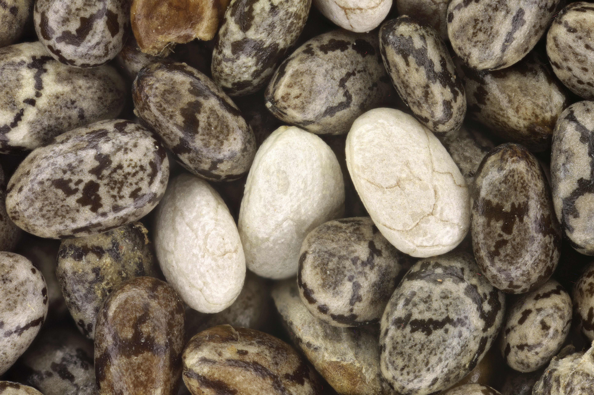

image by Keegan Fields on Wikimedia Commons
license infoDelicious moist pudding! I use my blender to grind the chia seeds, creating a smoother, more traditional pudding texture.
To achieve the proper pudding texture, make sure to follow the measurements.
However! The flavor is customizable! One of my favorites is to use chocolate milk for the liquid, maple syrup for the sweetener, and sliced strawberries for the topping. Feel free to mix and match various ingredients!
PRO TIP: rinse chia seed pudding off of any dirty dishes immediately! Or at least soak the dishes! The chia seed pudding is very difficult to wash off after it dries.
makes 1 serving (but 2 servings worth fits easily in most blenders)